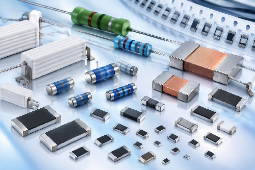

Thin Film Precision Resistors
정밀 측정과 센싱 회로용 고정밀 박막 저항기.
Viking Tech 저항기 제품군을 용도별로 확인할 수 있습니다.

정밀 측정과 센싱 회로용 고정밀 박막 저항기.
범용 및 기능성 전자회로용 후막 저항기.
전원·배터리 회로의 전류 측정을 위한 저저항 제품.
고전압 및 고전력 회로에 대응하는 저항기.
정밀·고신뢰성과 고전력 응용을 위한 구조별 저항기.
황화 및 순간 서지 스트레스에 대응하는 기능성 제품.
자동차 전장 응용을 위한 저항 제품군.
여러 저항을 한 패키지에 구성한 배열형 제품.
첨부된 Viking 카탈로그 분류를 기준으로 정리했습니다. 실제 공급 가능 시리즈와 최신 사양은 MAXGAIN SYSTEMS에 문의해 주세요.